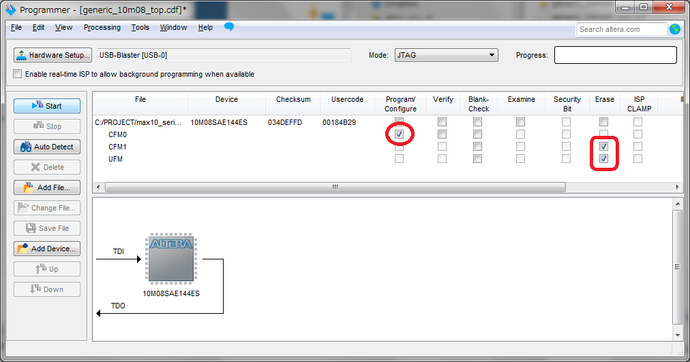

rpdwriterフォルダ以下のmax10_rpdwriter.crxファイルをこのページにドラッグ＆ドロップしてインストールします。
下記のメッセージパネルが出るので、アプリを追加をクリックします。

Chromeブラウザのアプリページを開いて「MAX10 RPD-Writer」が追加されているのを確認してください。
MAX10 Serial Config Updaterは、MAX10のデュアルイメージコンフィグレーション機能を用いて、一般的なUSBシリアルを使用して内蔵コンフィグレーションフラッシュメモリを書き換えるツールセットです。
最初のMAX10デバイスへブートローダーの書き込みにはUSB-Blasterが必要ですが、ブートローダーが書き込まれたMAX10デバイスへはUSBシリアルでコンフィグレーションデータの書き込みが可能になります。
書き込みツールはChromeアプリで提供され、Windows/Linux/Chromebook上のChromeであればOSを問わず利用が可能です。
MAX10 Serial Config Updaterは以下の環境で動作します。
FTDIのダウンロードページでVCPドライバをダウンロードしてインストールします。詳細手順はこちら。
COMポートが認識されたら、デバイスマネージャーから該当COMポートを右クリックしてプロパティを開きます。
ポートの設定の詳細設定ボタンをクリックします。
BMオプションの待ち時間を16ms→1msへ変更してOKボタンで反映させます。
この設定はWindowsのみです。Linuxカーネル2.6以降ではFTDIのVCPが入っているため、LinuxおよびChromebookではUSBシリアルケーブルを接続するだけで使えます。
Chromeブラウザのアドレスバーで「chrome://extensions」と入力するか、右上の設定ボタンから「その他のツール→拡張機能」を選択して拡張機能のページを開きます。
rpdwriterフォルダ以下のmax10_rpdwriter.crxファイルをこのページにドラッグ＆ドロップしてインストールします。
下記のメッセージパネルが出るので、アプリを追加をクリックします。
Chromeブラウザのアプリページを開いて「MAX10 RPD-Writer」が追加されているのを確認してください。
Altera 10M08 Evaluation Kit用のブートローダーイメージは下記のフォルダに格納されています。
max10_config_updater/qsf/10m08eval/bootloader/
このフォルダにあるgeneric_10m08_top.pofをQuartus Programmerでボードへ書き込みます。
POFファイルの書き込みにはUSB-Blasterが必要です。
Quartus ProgrammerではCFM0のProgramのみチェックを入れ、CFM1とUFMはEraseをチェックして書き込みを実行してください。

MAX10 Serial Config Updaterは下記リポジトリからダウンロードできます。
 max10_config_updater
max10_config_updater
本ソフトウェアパッケージはMITライセンスの元に発行されています。
The MIT License (MIT)
ただし各々のソースに対し、別途個別に明記ある場合はそのライセンスを優先するものとします。
また本パッケージにはAltera社のツールにより自動生成されたファイルが含まれます。
Quartusプロジェクトフォルダ以下のファイルについてはAltera社のライセンス条項を確認してください。